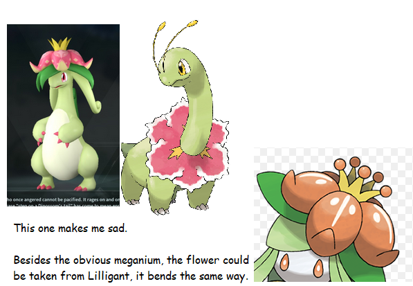

- 포켓몬 표절 논란

포켓몬과의 비교로 시작된 논란이고 팬덤간에 가장 논쟁이 되고 있는 사항이다보니 여러가지 루머가 양산되기도 했다.
대표적으로 팰 디자인에 AI를 사용했다는 것과 캐릭터 모델 도용 루머가 그것이다.
우선 전자#는 포켓 페어의 CEO 타쿠로 미조베가 X(트위터)에 "AI가 너무나 진화를 했기 때문에 어느 쪽이 포켓몬인지 알 수 없게 되었다..."#라는 내용으로
글을 투고한 것을 두고 만들어낸 루머이며 본 문서의 개발일지 문단을 보면 알겠지만 엄연히 정식으로 담당자를 고용해 만들었다고 밝혔던 만큼 사실이 아니다.
후자는 본 문서에 단락이 분리될 정도로 시끄러웠지만 결국 거짓 선동을 한 것이 드러나면서 이 역시 거짓으로 판명되었다.